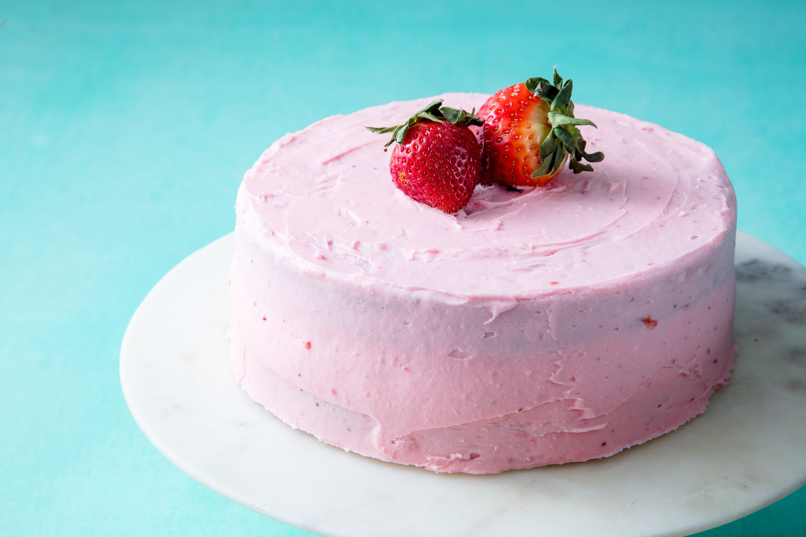

CAKES $ BAKES
STRAWBERRIES CAKES

INGREDIENTS
- 500g / 1 lb strawberries , hulled (ie tops removed)
- 1 cup sugar , caster/superfine best but granulated ok too
- 1/2 cup oil , canola or vegetable oil
- 2 eggs , large (~50g/1.75 oz each))
- 1 tbsp grated lemon rind
- 1/4 cup lemon juice (1 large lemon))
- 1 cup plain yoghurt , unsweetened (Greek or just plain)
- 1 tsp vanilla extract (or essence)
- 2 1/4 cups flour , plain/all purpose
- 4 tsp baking powder (or 1 1/4 tsp baking soda)
- Pinch of salt
SERVING
- Whipped cream
- Extra strawberries
- Icing sugar/ powdered sugar , for dusting
INSTRUCTIONS
- Preheat oven to 200°C/390°F (180°C fan).
- Grease and line a 23 cm / 9" cake pan with baking paper/parchment paper. (Any type of cake pan is fine)
STRAWBERRIES
- For inside of cake: Dice some strawberries into ~1.5cm / 1" pieces to make 1 cup (about 1/3 of the strawberries)
- Topping: Cut the remaining strawberries in half.
CAKE
- Place Wet ingredients in a bowl and whisk well for 1 minute.
- Add Dry ingredients then whisk well until lump free.
- Pour half into cake pan, smooth surface. Scatter over diced strawberries.
- Top with remaining batter. Smooth surface, then top with halved strawberries, cut face down.
- Bake 50 minutes or until skewer inserted into centre comes out clean. (Note 1) If you need to cook longer, cover with foil if it starts getting too golden.
- Stand 15 minutes in the cake pan before turning out onto cooling rack.
- Cool 15 minutes+ before serving warm or at room temp. Dust with icing sugar, and serve with cream or if serving warm, ice cream!
FOR THE CAKE
- cooking spray
- 2 c. all-purpose flour
- 3 tbsp. cornstarch
- 1 1/2 tsp. baking powder
- 1/2 tsp. baking soda
- 1 tsp. kosher salt
- 1/2 c. (1 stick) butter, softened
- 1 c. granulated sugar
- 2 large eggs
- 3/4 c. strawberry compote
- 1 tsp. pure vanilla extract
- 3/4 c. milk
- Pink food coloring (optional)
FOR THE FROSTING
- 1 (8-oz.) block cream cheese, softened
- 1/2 c. (1 stick) butter, softened
- 1/4 c. strawberry compote
- 4 1/2 c. powdered sugar
- 1 tsp. vanilla extract
- 1 tsp. kosher salt
- Pinch kosher salt
- Fresh strawberries, for garnish (optional)
DIRECTIONS
- Bake time - if your oven runs weak so it takes longer to bake, it can really affect the bake time of this cake due to the juiciness of the strawberries! At 180°C/350°F (160°C fan) it took me 30 minutes longer, and a bit more moist inside (but still a terrific soft tender crumb).
- Different measures in different countries - tablespoon and cup sizes differ slightly from country to country. In most recipes, the difference is not enough to affect the outcome of the recipe, but for baking recipes, you do need to be careful.
- This cake recipe is forgiving enough such that the difference in cups won't matter - I've made it mixing up US and Australian cups (the greatest size variance) and the outcome was exactly the same.
- Cake batter recipe is from my Lemon Yogurt Cake and Blueberry Cake. Strawberry Cake version inspired by various recipes I've seen around in including ones from Smitten Kitchen, Martha Stewart and Natasha's Kitchen.
- Storage - keeps well for 5 days, the crumb stays nice and moist thanks to the yogurt and oil. If it's hot and humid where you are, keep it in the fridge and bring to room temp before serving. If it's cold where you are, it doesn't need to be kept in the fridge. Also freezes 100% perfectly.